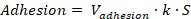
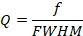
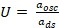
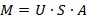
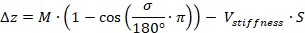
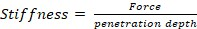
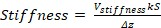

|
理论
|
DPFM测量获取的数据，即粘附力和刚度图像，以电压为单位。为了将测量得到的伏特数数学转换为物理单位（例如粘附力图像的N或刚度图像的N/m），需要与实验条件相关的进一步信息。以下部分描述了将电压值转换为相应物理值所需的公式和参数。
然而，相互作用的力的性质未被考虑。获得的物理值仍可用于探针-样品界面的建模。
请注意，从DPFM测量中提取定量值强烈依赖于温度和湿度等环境条件。此外，在以下描述的步骤中未考虑测量期间的探针变化。
粘附力的校准可根据以下公式进行：

(1)其中包含测量的电压 V粘附力、悬臂梁的弹簧常数k以及光束偏转系统的灵敏度 S。
V粘附力 是由粘附峰的负值确定的电压。
近似的弹簧常数可在悬臂梁数据表中找到。另一种方法是使用Sader方法进行悬臂梁弹簧常数校准。更多信息和在线计算表格可在 http://www.ampc.ms.unimelb.edu.au/afm/calibration.html 找到。频率可通过频率扫描确定。品质因子 Q 使用悬臂梁频率 f 和频率峰的 FWHM 计算：

灵敏度 S 可以通过在相对于悬臂梁较硬的表面（如硅晶片）上执行力-距离曲线来确定。灵敏度显示为力曲线在排斥区域中斜率的倒数（因此单位为nm/V）。这些值高度依赖于悬臂梁类型（特别是其长度）以及激光斑点在分段光电二极管上的对准。因此，每次更换悬臂梁时都需要重新计算 S。
要校准刚度，需要了解一些额外的量。这些量必须在测量前确定。在这种情况下，一个重要的量是探针本身的调制幅度 M。如果无法直接观察该量（例如通过干涉法），则可以从施加到调制压电的驱动幅度与光电探测器的响应幅度之间的线性关系来估计调制幅度。
为此，需要在硬硅晶片上进行初步测量，类似于悬臂梁灵敏度 S 的确定。通过向调制压电施加较小的驱动幅度 ads，同时悬臂梁与硅晶片接触，预计从光电探测器获得正弦调制 aosc 作为响应。只要悬臂梁未脱离样品，这两个调制幅度的比值 U 不应改变，并且可用于确定DPFM测量期间的调制 M。

(2)
(3)其中 A 表示DPFM成像期间施加的驱动幅度， S 表示灵敏度。
使用刚度搜索窗口的宽度，角度 σ，可以确定穿透深度 Δz：

(4)V刚度 是在刚度图像中测量的电压。
如果将样品的局部刚度定义为：

(5)则：

(6)该关系允许以与粘附力相同的方式校准DPFM数据。由于将刚度和粘附力数据转换为物理单位是重复性的，因此可以通过使用WITec Project的 计算器功能 来实现。
关于如何将DPFM测量提供的电压转换为物理单位的示例在 后续页面 中描述。
进一步阅读
1. B. Hopp 等, ArF准分子激光辐照聚甲基丙烯酸甲酯中孵化现象的研究：基于脉冲力模式原子力显微镜. Journal of Applied Physics 96, 5548 (2004).
2. U. Schmidt, S. Hild, W. Ibach, O. Hollricher, 利用共聚焦拉曼AFM在纳米尺度上表征薄聚合物薄膜. Macromolecular Symposia 230, 133-143 (2005).
3. S. Shanmugham, J. Jeong, A. Alkhateeb, D. E. Aston, 利用数字脉冲力模式AFM测量聚合物纳米线弹性模量. Langmuir 21, 10214-10218 (2005).
4. Y. Chen, B. L. Dorgan, D. N. McIlroy, D. Eric Aston, 边界条件对银纳米线纳米力学弯曲行为及弹性模量测定的重要性. Journal of Applied Physics 100, 104301 (2006).
5. M. J. Holzwarth, 数字脉冲力模式. G.I.T. Imaging & Microscopy 4, (2006).
6. Y. Chen 等, 气-液-固法生长GaN纳米线的力学弹性. Nanotechnology 18, 135708 (2007).
7. A. Gigler, C. Gnahm, O. Marti, T. Schimmel, S. Walheim, 利用数字脉冲力模式成像实现材料的定量表征. Journal of Physics: Conference Series 61, 346-351 (2007).
8. U. Schmidt 等, 共聚焦拉曼AFM——异质材料无损表征的强大工具. Nanotechnology 4, 48 (2007).
9. O. Marti, M. Holzwarth, M. Beil, 利用数字脉冲力模式成像测量癌细胞的纳米力学性质. Nanotechnology 19, 384015 (2008).
10. J. Dong 等, 水介质中治疗性生物医学涂层的多模态动态成像. Langmuir 25, 5442-5445 (2009).
11. D. Gangadean, D. N. McIlroy, B. E. Faulkner, D. E. Aston, 一维纳米材料三点弯曲试验的Winkler边界条件. Nanotechnology 21, 225704 (2010).
12. a. Klash, E. Ncube, B. du Toit, M. Meincken, 桉树木纤维表面纤维素和木质素含量与基因型和立地条件的关系测定. European Journal of Forest Research 129, 741-748 (2010).
13. U. Schmidt, 聚合物材料与涂层的多模态成像. Physics Best, (2013).